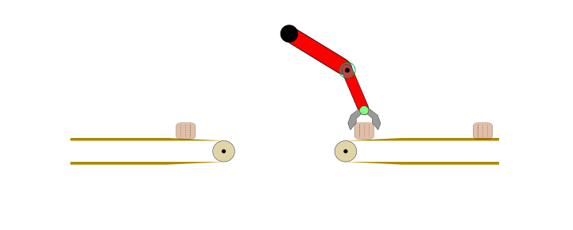
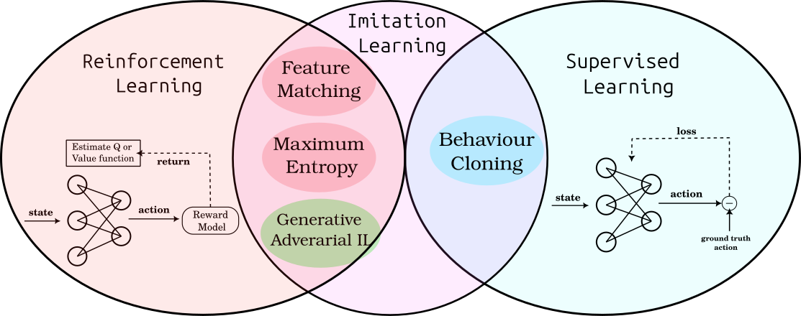
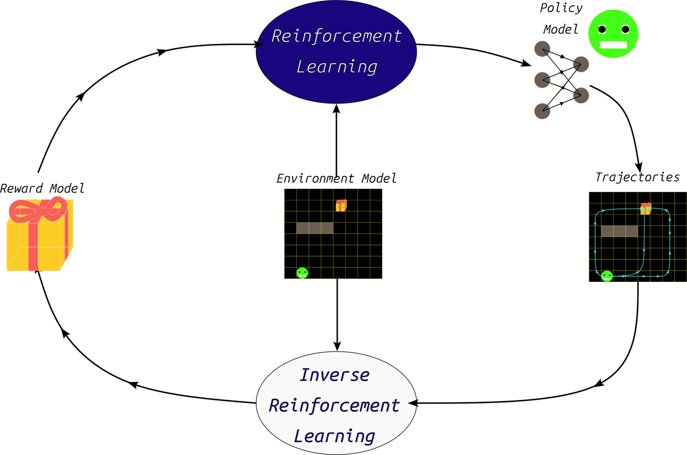
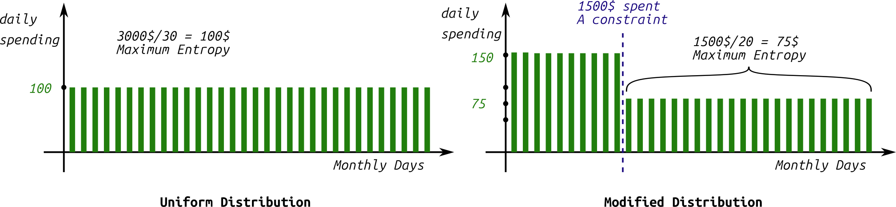
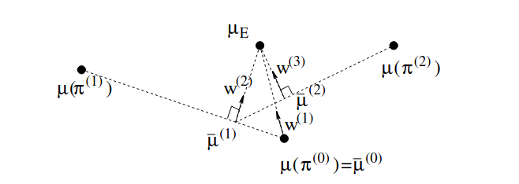

Your Complete Guide to Maximum Entropy Inverse Reinforcement Learning
Imagine teaching a robot to cook, drive a car, or even manage a stock portfolio. A natural starting point is often to have the machine learn by simply copying how a human expert performs the task – observing their actions and mimicking their decisions. This approach, where machines learn from demonstration, is surprisingly similar to how we humans learn ourselves. Think about how children learn to speak, or how teenagers learn to drive: it's often through imitation. This fundamental concept forms the basis of a field in machine learning called Imitation Learning. In this post we will dive deep into a specific and popular method of Imitation Learning: Maximum Entropy Inverse Reinforcement Learning
Table of Content
-
Introduction to Imitation Learning
- Imitation Learning
- Maximum Entropy Principle
-
Feature Expectation Matching by Margin Maximization
- Algorithm Implementation
- FM Projection Formulation
-
Maximum Entropy Inverse Reinforcement Learning
- Backward Pass
- Forward Pass
- Final Remarks
- Practical Implementation
- Important Note
-
Deep Maximum Entropy IRL
- Algorithm Implementation
-
Conclusion
Introduction to Imitation Learning
Imitation Learning (IL) is the problem of extracting the policy behind a set of given demonstrations. It can be used to learn any automation task, but it is most commonly applied to control tasks. In this work we focus on Inverse Reinforcement Learning (IRL), which is a special branch of imitation learning where the goal is to learn a policy that maximizes the expected reward given some demonstration data.
Applying IL and IRL may not be optimal choice for any automation task. For example, consider the problem of transferring a body from one conveyor belt to another via a robotic arm, as shown below.

Figure 1: Fully automated task in a controlled environment where IL is an overkill.
The problem here is clearly defined, and the steps can be hard-coded and executed directly. However, for more complex tasks, particularly in open and uncontrolled environments like autonomous vehicle driving (as done by Waymo) or food preparation by robots (as tested here), presents huge difficulty to hand-craft the needed steps as done earlier.

Figure 2: Examples of real world projects utilizing Imitation Learning (Self-driving Source ), Cooking Robot: (Mobile ALOHA) .
Therefore, we often resort to IL depending on realistic and error-free examples, captured usually from human expert demonstrator. The goal is to learn a strategy or policy that matches the behavior of the machine with that of the expert/s demonstrator. Formulating the problem in this way is the exact definition of IL, which can be then solved systematically utilizing optimization methods reference.
In the references, the issue of learning through imitation is addressed either with supervised learning methods, which would be similar to doing prediction, and in this case, will be called Behavior Cloning. Or through learning the unknown reward function first and applying RL later, which will be called then Inverse Reinforcement Learning (IRL).
In this article, we will focus on the second branch of these methods, namely IRL, and more specifically MaxEnt IRL, which relies on the principle of Maximizing Entropy as it represent a popular and effective IRL method, future posts will be dedicated to other IRL methods such as Generative Adversarial Imitation Learning GAIL, which has proven to be more effective in many environments. A short overview of GAIL and other IRL methods was given in our previous post here which illustrates and compare these methods. The following figure show a representation of all these IL methods.

Figure 3: Overview of IL sub-methods in relation to ML fields. Source
In that regard, IRL is essentially reversing the problem of RL from the input and output perspective, as shown in the following image. However, in both cases, the problem is formulated as a Markov Decision Process (MDP), as clarified in our previous post on RL.

Figure 4: RL in relation to IRL
As background for understanding Maximum Entropy IRL, we start next by clarifying the statistical principle of Maximum Entropy.
Maximum Entropy Principle
MaxEnt IRL proposed in 2008 is one of the early methods to deal with the problem of learning from demonstrations (or IL), along with its predecessor Feature Matching and Margin Maximization in source. However, the principle upon which it relies was proposed at much earlier time by E.T. Jaynes.
Demonstrating Example
Suppose you earn 3,000 USD per month (an arbitrary figure). You want to allocate your expenses in a reasonable way, enough to cover you for the entire month, averaging 3,000 USD divided by 30 days, which is $100 per day. This is an initial, regular distribution (as shown in the right part of the figure 5). However, after a period, you start to observe that you are spending half of this amount within the first 10 days of the month. This is something you cannot control, essentially creating an additional constraint on the original distribution.
How would you adjust the original money distribution over the days of the month, after gaining this information?
The correct answer to this question must rely on the principle of maximum entropy, as shown in the following figure.

Figure 5: Maximum Entropy seems intuitive idea: When no information is given, the most uncertain mode is the safest choice.
To derive the evolving distribution that corresponds to the monthly expenses when half of the salary is spent within the first 10 days, the initial distribution should be adjusted with the fewest possible changes – in other words, it shouldn't impose any further constraints on the original distribution beyond the given ones. This final textual phrase represents one of the formulations adopted for the principle of maximizing entropy, which states that the best possible estimate for a probability distribution of a system's variable satisfying specific given conditions is the estimate that yields the greatest degree of uncertainty. The uncertainty here is measured in terms of Shannon Entropy $H$ (first proposed by Shannon in the theory of information and communications) defined as follows:
$$H(X) = - \int_{x_i \in X} P(x_i) \cdot \log(P(x_i))$$
Where $P(x_i)$ is the continuous probability distribution of variable $x_i$, and $X$ is the space of values for variable $x$ (for the discrete variant we replace the integral by a sum).
We also observe that the entropy maximum value is zero, which occurs when the distribution is perfectly defined by a single value (deterministic). The minimum value of this entropy occurs when the distribution is perfectly uniform across the sample space $X$ – meaning all values are equally probable. This applies wether the distribution is continuous or discrete.
Based on this idea, we note that the constraint of spending 1500 USD within the first 10 days, should be represented by a maximum entropy during those 10 days, i.e., 1500 USD divided by 10 equals $150 per day. We repeat this for the remaining 20 days, where 1500/20 days = 75 USD per day. This solution of maximum entropy should be the least erroneous on average compared to any other random solution.
However, to apply this principle to the problem of inverse RL, it’s essential to clarify the relationship of the constraint being imposed. This necessitates explaining a method that preceded Maximum Entropy IRL, namely Feature Expectation Matching by Margin Maximization methods. The solution provided by this last method provide an ill-posed (ambagious) solution for IRL due to the possibility of satisfying its constrains by many hypothesis of the ground truth reward function. This has motivated the proposal of Maximum Entropy IRL. In the following, we will start by reviewing the Feature Expectation Matching method, delving into its assumptions and algorithm in detail.
Feature Expectation Matching by Margin Maximization
In this method, the solution is based on the assumption that the expert behavior generating expert trajectories attempts to maximize a linear reward function $R = \omega \cdot \phi(s_t)$ of a specific set of features inferred from the current agent state $\phi(s_t)$ utilizing the function $\phi()$. Therefore the return to maximize will be:
$$ \mathbb{E} [V(s_0)]= \mathbb{E}[ \sum_{t=0}^{\infin} \gamma^t R(s_t)|\pi] \newline \quad \quad \quad \quad \quad = \omega \cdot \mathbb{E}[\sum_{t=0}^{\infin} \gamma^t \phi(s_t)|\pi]\newline \quad \quad = \omega \cdot \sum_{\tau \sim \pi} \Phi(\tau) \newline \quad = \omega \cdot \mu(\pi)\newline \text{where:}\newline \Phi(\tau) = \sum_{s_t \in\tau} \phi(s_t) $$
This quantity $\mu(\pi)$ defined as a function of $\pi$ is the expected value of $\Phi(\tau)$ for the all the trajectories under this policy and is called the trajectory feature expectation. Thus, for the expert policy, we have:
$$ \hat{\mu}(\pi_E) = \frac{1}{M}\sum_{i=1}^{M} \Phi(\tau_i) $$
Where $M$ is the count of the demonstration trajectories $\mathcal{D} = {\tau_1, \cdots, \tau_M}$.
We then train policy models iteratively by trying to match $\mu(\pi_i)$ of the trained policy $\pi_i$ with that of the expert under the unknown reward parameters $\omega$, as the reward is linear, namely:
$$\omega_i \hat{\mu}(\pi_E) - \omega_i \mu(\pi_i) = 0 \newline$$
$$\omega_i (\hat{\mu}(\pi_E) - \mu(\pi_i)) = 0 \newline$$
$$\text{from that we note the need to minimize L2 norm of both terms:}\newline$$
$$\min |\omega_i |_2 \cdot |\hat{\mu}(\pi_E) - \mu(\pi_i)|_2 $$
Algorithm Implementation
Therefore, FM proposes the following algorithm for extracting optimal $\omega^*$:
-
Initialization: Begin with a random policy, denoted by $\pi_{i=0}$, and calculate its feature expectation $\mu(\pi_{i=0})$ and then set the value $i$ to 1. Store the policy parameters within a policies pool ${\pi_0, \cdots, \pi_{i-1} }$ recording all the trained policies.
-
Calculating $\omega_i$ the reward parameters by solving: $$t = \max_{\omega} \min_{j} {_{j=0}^{i-1} \;\omega^T \cdot (\mu(\pi_E) - \mu(\pi_i))}$$
This optimization constrain can be formulated as a Quadratic Programming problem (QP), and then solved by methods like Support Vector Machine (SVM), where the problem is formulated as a classification task with a label of 1 assigned to $\mu_{\pi_E}$ and a label of -1 is assigned to the expectation of every other policy $\mu(\pi_i)$. In that case, the vector $\omega_i$ represents the unit normal vector on the hyper-plane separating these two classes. Its value is obtained after training an SVM using a suitable QP Solver.
-
Convergence Check: If the above error $t$ is $t\le \epsilon$, where $\epsilon$ is the permissible error threshold, then the training can be stopped; otherwise, continue to step 4.
-
Policy Update: After calculating the values of $\omega_i$ according to step 2, train a new policy $\pi_i$ based on the new reward $R(s_t) = \omega_i \cdot \phi(s_t) $, and then find its corresponding feature expectation $\mu(\pi_i)$. Finally, append the new trained policy to the policies pool.
-
increment the counter $i = i+1$ and go to the step 2 above.
It is noted that $t$ here represents the margin, for which the expected return difference between all the trained polices and the expert policy should be minimized as much as possible in order to get the most fitting reward parameters $\omega$ values.
The FM paper suggests also the possibility of finding a linear combination between several policies models from the policies pool ${\pi_0, \cdots, \pi_{i-1} }$, in order to find the closest feature expectation $\mu$ to the expert’s. This can be formed as an additional QP problem, where the new combined policy will have the following feature expectation:
$$\mu_{1+2} = \lambda_1 \cdot \mu(\pi_1) + \lambda_2 \cdot \mu(\pi_2) $$
The corresponding final policy will choose its action each time proportional to the factors $\lambda_1 , \lambda_2$ above, in a similar manner to epsilon greedy algorithm in DQN.
In conclusion, this method does not guarantee the restoration of the ground truth values of the reward function because it relies on matching an approximate measure, which is the feature expectation. However, it does guarantee matching the expert's behavior if the ground truth reward, $R^*(s_t)$, is a linear function of the feature vector $\phi(s_t)$.
FM Projection Formulation

Figure 6: Three iterations for projection implementation of FM. Source
There's another more direct formulation for feature expectation matching. This formulation doesn't involve a QP optimization process, which simplifies the calculations, and it replaces it with computing a normal vector (or ray) parameters that's orthogonal to the direction of the line connecting the last two feature expectation values from the policies pool under training i.e. ${\pi_{i-2}, \pi_{i-1}}$. This resulting unit normal vector will represent $\omega$, as it maximizes the margin between these trained feature expectations from one side and the expert feature expectation for the other (found approximately using the given trajectories set $\mathcal{D}$). In the initialization step, this vector values are directly set to the difference between the initialized policy and the demonstrated feature expectations.
The paper shows that the algorithm can still work even when the true reward function is not linear; however, there will be an error proportional to the magnitude of the noise this approximated linear reward will have compared to the original.
Next, we will move to the main topic of this post: MaxEnt IRL showing its theory and implementation as clear as possible.
MaxEnt IRL Formulation
Although the previous constraint of matching features expectations between the expert policy and the policy being trained can learn the target policy, it still suffers from some problems:
-
These imposed constraints are insufficient to uniquely determine the policy matching the expert. This makes it an "ill-posed" problem, which means that there could be a large number of policies with the exact feature expectations but with very different behavior.
For example, let's consider the trivial case when the reward function is a constant and not state-dependent. This means that all policies and behaviors will have the same expectations – the optimal effect.
-
The expert behavior must be truly optimal with respect to the actual reward function, as we assume a maximum margin exists between it and any other policy. However, in the real world, the policy being imitated is often sub-optimal, which makes the convergence more difficult.
To solve the first problem, the MaxEnt IRL paper suggested a solution based on the principle of maximizing entropy, which is previously explained. This means that amongst all policies that satisfy the feature matching constraints, we select the policy of the maximum entropy, expressed as:
$$ H^{opt} = - \sum_{s\in S} \sum_{a \in A} \pi^{opt}(a|s) \cdot \log(\pi^{opt}(a|s)) $$
where $A$ and $S$ are the actions and states spaces respectively.
To solve the second problem, the Maximum Entropy IRL method defines a probability distribution $P(\tau)$ over all possible trajectories in the environment, which makes it solution probabilistic and accounting sub-optimal behavior. The integral of this probability over all possible trajectories should always equals one:
$$\int_{\tau \in T} P_{\pi_L}(\tau) = 1$$
Where $\pi^L$ is the policy being trained. Thus, it can be said that the expected value of $\Phi(\tau)$ for all trajectories is formed as:
$$\mathbb{E}_{\tau \sim \pi^L} [\Phi(\tau)] = \int_{\tau \in T} P_{\pi_L}(\tau) \Phi(\tau)$$
Therefore, to maximize entropy with respect to the previous distribution, we form our second constraint in addition to our previous feature expectation matching constraint:
$$\max_P H(P(\tau)) = -\sum_{\tau \in T} P(\tau) \log(P(\tau)) $$
Therefore, we formulate the full problem with these constraints as a constrained optimization problem as follows:
$$\min_P \sum_{\tau \in T} P(\tau) \cdot \log(P(\tau))$$
$$\text{s.t} \quad \mathbb{E}_{\tau \sim P(\tau)}[\Phi(\tau)] = \mathbb{E}_{\tau \sim \mathcal{D}}[\Phi(\tau)] $$
$$\sum_{\tau \in T} P(\tau) = 1; \quad \forall \tau:P(\tau)\ge 0 $$
This problem can be solved using Lagrange multipliers, which allow us to form a Lagrangian function $\mathcal{L}(\omega,\lambda)$. This function, when derived with respect to $\omega$, helps finding the local minima of the distribution $P(\tau)$ satisfying the previous constraints. As the problem is convex, this local minimum will be equivalent to the global minimum, so we start by writing:
$$\mathcal{L}(\omega,\lambda) = \sum_{\tau \in T} P(\tau) \cdot \log(P(\tau)) \newline + \lambda_1 \cdot (\sum_{\tau \in T} P(\tau) - 1) \newline + \lambda_2 (\sum P(\tau) \phi(\tau) - \mu(\pi_E)) $$
Where $\lambda_1$ and $\lambda_2$ are the lagrangian multipliers. This set represents the previous constraints and because we want to find the minimum value of $P(\tau)$ satisfying the previous constraints, we differentiate the expression with respect to it, as follows:
$$\nabla_{P(\tau)} \mathcal{L} = \sum_{T} (\log(P(\tau)) + \lambda_1 + \lambda_2 \phi(\tau) + 1) = 0$$ $$\lambda'_1 = - \lambda_1 -1 $$ $$\Rightarrow\newline$$ $$\log(P(\tau)) = \lambda'_1 - \lambda_2 \phi(\tau)$$ $$\text{taking exponent of both sides}$$ $$P(\tau) = e^{\lambda'_1} \cdot e^{-\lambda_2 \phi(\tau)}$$ $$\text{by redefining the constants we get:}$$ $$P(\tau) = Z \cdot e^{ \omega \phi(\tau)}$$
Since the second constraint requires the distribution to be probabilistic and integrate into 1, it is logical to define the constant $Z$ that appears in the last formulation as a normalization constant, i.e., the sum of all exponential terms $Z=\sum_T e^{\omega \Phi(\tau)}$. This leads to our new distribution formulation:
$$P(\tau) = \frac{e^{\omega \Phi(\tau)}}{Z}$$ $$P(\tau) = \frac{e^{\omega \Phi(\tau)}}{\sum_T e^{\omega \Phi(\tau)}}$$
This constant $Z$, which is also a function of the vector $\omega$, is called the partition function. Thus, the distribution $P(\tau)$ resemble Gibbs distribution, defined in terms of the exponential function.
After defining this form, which represents a solution to the previous constraints, the remaining problem consists of maximizing the value of this distribution with respect to the given expert demonstration database $\mathcal{D}$. Here, we maximize the log likelihood of this function, as it performs better numerically for the optimization, so we get:
$$\argmax_{\omega} \sum_{\tau \in \mathcal{D}} \log(P(\tau))$$ $$\Rightarrow \nabla_{\omega} \sum_{\tau \in \mathcal{D}} \log( \frac{e^{\omega \Phi(\tau)}}{\sum_T e^{\omega \Phi(\tau)}}) = 0$$ $$\nabla_{\omega} [\sum_{\tau \in \mathcal{D}} (\omega \cdot \Phi(\tau) - \log(\sum_T e^{\omega \Phi(\tau)}))] $$ $$\mathbb{E}_{\pi_E}[\Phi(\tau)] - \frac{\nabla_{\omega}Z}{Z} = 0$$ $$\text{Calculus rules} $$ $$\mathbb{E}_{\pi_E}[\Phi(\tau)] - \frac{e^{\omega \Phi(\tau)}\cdot \Phi(\tau)}{Z} = 0$$ $$\mathbb{E}_{\pi_E}[\Phi(\tau)] - \sum_{\tau \in T} P(\tau|\omega) \cdot \Phi(\tau) = 0$$
The second term in the last formulation represents the expected values of the features expectations for the distribution associated with the reward values, given the reward parameters $\omega$. However, it can be represented also as state-distribution (instead of trajectories distribution). Then, we define another distribution on states $D(s_i)$, as a function of each state $s_i$ in the state space $S$, such that the sum of their values over the entire state space is equal to the length of a single path in this environment, i.e., $len(\tau)$. This value is known as the State Visitation Frequency, and is multiplied by the features associated with each state in $s_i$, and for all states in the state space to result in the feature expectation. Thus, we get the final expression:
$$ \mathbb{E}_{\tau \sim \mathcal{D}}[\Phi(\tau)] - \sum_{s_i} D_{s_i} \phi(s_i)$$
What remains here is implementing this last formula, which can be done in two steps. The first involves calculating $D(s_i)$ from the current policy, expressed in terms of the randomly initialized $\omega$ parameters for the first iteration. This step is called the Backward Pass. Then, the values of $\omega$ are updated based on the previous optimization expression in the second step, which is called the Forward Pass. These two steps seems difficult to implement, but they have proven practical effectiveness in previous tests. In the following we will explain these steps in details:
Backward Pass
This first step, the Backward Pass, is practically a step of training a policy model according to the given $\omega$ values as input. This step is performed in a manner similar to Value-Based methods (like DQN) relying on value function estimation, where the values of states are based on the distribution of $P(\tau)$ but on the level of (state,action) pairs, not the full trajectory. It denotes this quantity as $Z_{s,a}$ in the original paper, which can be considered the exponential version of the state values. Thus, the policy will be defined as:
$$\pi(s_i|a_i) = \frac{e^{\omega^T \cdot \phi(s_i)}\cdot Z_{s_i|a_i}}{Z_{s_i}};$$ $$Z_{s_i} = \sum_{a\in A} e^{\omega^T \cdot \phi(s_i)}\cdot Z_{s_i|a_i}$$
The calculation of $Z_{s_i}$ happens recursively from the terminal states (hence the name), where the value is initialized to 1. Practically, this is a forward RL learning step where other value-based approaches like Deep Q Network (DQN) may also work.
Forward Pass
In this step, we calculate $D_{s_i}$ (State Visitation Frequency) for all states, starting from the initial states where the initial probability distribution given in the MDP (Markov Decision Process) formulation, defines the values of $D_{s_0}$. We then proceed through the states based on the trained policy, updating the associated $D_{s_i}$ values for each state. This process is repeated several times where all possible states in the environment are covered. The final values of $D_{s_i}$ for each step are updated with:
$$ D_{s_k,t+1} = \sum_{s_i\in S} \sum_{a_i\in A} D_{s_i,t} \cdot \pi(a_i|s_i) $$
where $s_k$ is the state that is transitioned to when action $a_i$ is taken in state $s_i$. We iterate over the calculation of $D_{s_i}$ multiple times to sum all these values and obtain the final values for State Visitation Frequency:
$$ D_{s_i} = \sum_t D_{s_i,t} $$
Final Remarks
-
If the environment is not deterministic, but stochastic—meaning there are different probabilities for transitions when taking the same action $a_i$ in state $s_i$—then the probability of a previously defined path must be multiplied by the transition probabilities within that path. This is what motivated the proposal of new variants of MaxEnt IRL to adapt to this situation, such as Maximum Casual Entropy.
-
The evaluation metric, for evaluating the trained models, is calculated as the difference between the trained value functions based on the trained and the ground truth rewards, as done in the work here.
-
Another observation is that the Maximum Entropy method, due to its probabilistic approach, does not require the assumption of expert path optimality. This contrasts with the feature expectations matching method, which may encounter problems if the behavior is not optimal or if the paths do not cover all states required within the environment.
-
Additionally, we note that the basic formula for $P(\tau)$ is what ensures the maximization of entropy, and through it, the probabilities of the policy function can also be derived as follows:
$$\pi(s|a) \propto \sum_{ (s,a) \in \tau_{t = 0}} P(\tau|s_0=s)$$
Practical Implementation
To facilitate the practical application of this algorithm, the following simplified steps can be alternatively followed:
- The reward parameters are initialized randomly.
- Then, random trajectories are generated within the environment (using a stochastic random policy model ). Through a sufficiently large set of these rollouts, the exponential distribution $P(\tau)$ is calculated for each trajectories and normalized based on its partition function.
- The loss value is calculated from the previous FM constrain of matching feature expectations between the expert trajectories and the randomly generated trajectories under the calculated $P(\tau)$.
- Finally, we backpropagate with this last loss to update the values of the reward function's coefficients, $\omega$.
These steps are repeated until a sufficiently low loss value is reached, at which point training stops, and the final reward function parameters is taken as the final output of the training process.
Important Note
A common issue for both of previous methods is the required reward linearity assumption for both in terms of the feature function. Therefore, a possible solution to learn non-linear rewards is to define the features in a way that makes their linear effect dominant. For example, if we know that expert behavior is positively influenced by the Earth's gravitational force, it would be inappropriate to include only altitude $h$ as a representation of the feature. The relationship with gravity is inversely proportional to the square of the altitude (i.e., proportional to $1/h^2$). Consequentially, the appropriate feature to use here would be $1/h^2$ making the effect linear when multiplied by suitable coefficients.
MaxEnt Deep IRL
To address the fundamental limitation of both FM and MaxEnt IRL method about reward linearity, and to enable learning rewards function of any degree or complexity Maximum Entropy Deep IRL (Deep Inverse Reinforcement Learning) trains the reward signal by defining a deep learning model of the reward, $R_i = r_{\psi} (\phi(s_i))$ where $\psi$ is the set of parameters of this model.
Using this deep model allows learning of a non-linear reward function over large state and action spaces. Additionally, we can assume that the feature function is also part of this new model, where the action also will be taken as input by this full model, as follows:
$$ R_i = r_{\psi} (s_i,a_i) $$
For example, it also enables the use of higher dimensional inputs like environment images as input features through Convolutional Neural Network (CNN) layers to process them. The previously defined distribution of MaxEnt IRL over all trajectories $T$ can then be formed as:
$$P(\tau|r_{\psi}) = \frac{e^{\sum_{(s,a)\in \tau} r_{\psi}(s,a)}}{\sum_{\tau' \in T}e^{\sum_{(s,a)\in \tau'} r_{\psi}(s,a)}} $$
Based on this, we want to maximize the log-likelihood under the expert demonstrations, namely with the term:
$$\mathcal{L}(\psi) = \log(P(\mathcal{D},\psi|r_{\psi})) $$ $$\quad \quad \quad \quad \quad \quad \quad= \log(P(\mathcal{D}|r_{\psi})) + \log(P(\psi))$$
To derive the optimization relationship, we, as before, perform differentiation with respect to the new training parameters $\psi$. This yields:
$$ \argmax_{\psi} \mathcal{L}(\psi) $$ $$\Rightarrow $$
$$\min_{\psi} \frac{\partial\mathcal{L}(\psi)} {\partial \psi} = \frac{\partial \log(P(\mathcal{D}|r_{\psi}))}{\partial \psi} + \frac{\partial \log(P(\psi))}{\partial \psi}$$
The second term $\partial \log(P(\psi))$ is treated as a regularization term, for example, in the form of an L1 (absolute) or L2 (squared) sum value constraint of the parameters set $\psi$, as part of the loss function. The first term is analogous to what is derived in the linear Maximum Entropy case: the difference in State Visitation Frequency between the expert trajectories and the learner trajectories under the reward $r_{\psi}$. However, this difference must be multiplied by the derivative of the reward function with respect to the parameters $\psi$ which is does not results in the feature vector $\phi(s_i)$ as before, but rather can be expressed as:
$$\frac{\partial \log(P(\mathcal{D}|r_{\psi}))}{\partial \psi} = \frac{\partial \log(P(\mathcal{D}|r_{\psi}))}{\partial r_{\psi}} \cdot \frac{\partial r_{\psi}}{\partial \psi}$$
$$\Rightarrow $$ $$\min_{\psi} \sum_{s\in S} [D_{s_i}^{\mathcal{D}} - D_{s_i}^{\psi}] \cdot \frac{\partial r_{\psi}}{\partial \psi}$$
The practical application of this algorithm is somehow similar to the formula of linear Maximum Entropy with the exception of the latest loss term, where the loss value will be backpropagated through the reward network $r_{\psi}$ with respect to the parameters $\psi$.
Another feature of MaxEnt Deep IRL is avoiding the possible underfitting of the linear reward function, which may occur when dealing with large training databases of expert trajectories that the linear reward function cannot represent. While in Maximum Entropy Deep IRL, the reward network depth can be adjusted as needed to overcome this problem.
Algorithm Implementation
Practically, we will introduce here a modified (an approximated) version of the algorithm that represent the maximization of the log: $\log(P(\mathcal{D}|r_{\psi}))$ to simplify the implementation in any environment under testing. The steps will be as follows:
- Randomly initialize the reward model parameters for the algorithm $r_{\psi}(s,a)$.
-
Explore as many trajectories as possible based on random policy, and find the unnormalized probability for each trajectory $\tau$ as following (utilizing differentiable $\psi$ values to calculate the gradients later):
$$e^{\sum_{(s,a) \in \tau} r_{\psi}(s,a)}$$
-
Find the approximated value of the partition function $Z$ and then normalize the previous probabilities:
$$Z_{r_{\psi}}= \sum_{\tau \in T} e^{\sum_{(s,a) \in \tau} r_{\psi}(s,a)}$$ $$\Rightarrow$$ $$P(\tau) = \frac{e^{\sum_{(s,a) \in \tau} r_{\psi}(s,a)}}{Z}$$
-
For expert trajectories $\mathcal{D}$, minimize the following loss by backporpagating through $r_\psi$ network, utilizing the previous $Z$ value:
$$\text{loss} = - \sum_{\tau \in \mathcal{D}} \log(P(\tau)) $$ $$\quad \quad \quad \quad \quad = - \sum_{\tau \in \mathcal{D}} \log(\frac{e^{\sum_{(s,a) \in \tau} r_{\psi}(s,a)}}{Z})$$ $$\quad \quad \quad \quad \quad = \sum_{\tau \in \mathcal{D}} ( \log(Z) - \sum_{(s,a) \in \tau} r_{\psi}(s,a))$$ $$\quad \quad \quad \quad \quad \quad = M \cdot \log(Z) -\sum_{\tau \in \mathcal{D}} \sum_{(s,a) \in \tau} r_{\psi}(s,a)$$
-
The training proceeds through this loss value to update the reward function parameters $\psi$ aiming to minimize this loss.
-
We repeat the previous steps until performance stops improving (indicated by the loss value), possibly under an independent split of the demonstrating trajectories used only for the validation. At this point, the model has fitted the data, and we can take the last values of $\psi$ as the final version of the reward model, and use it to train a final policy model.
In this approximated version we tried to optimize the same objective but approximately. However we also avoided complicated steps like intermediate value-based learning, and state-visitation-frequency estimation.
Conclusion
In this post, we explored two of the earliest and most popular methods for IRL. These techniques are often glossed over in technical papers, leaving many developers struggling with understanding and then implementing them. Our goal here was to unravel the core logic behind these methods, providing clear examples to make them more accessible.
Next, we’re planning posts that will tackle the popular GAIL and AIRL algorithms, and also explore how these ideas extend to scenarios with multiple agents. If you have any question, feel free to to ask! You can leave a comment below or open an issue on Github.
All images are generated by author, unless otherwise stated.